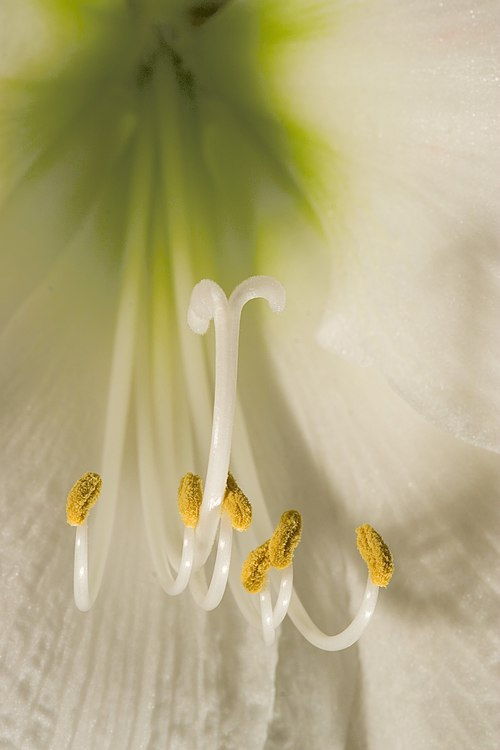
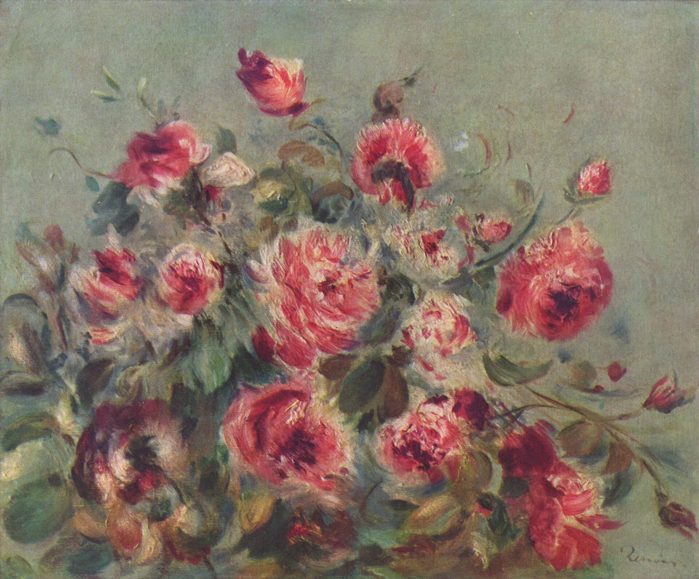

Kwiat – organ roślin nasiennych, w którym wykształcają się wyspecjalizowane elementy służące do rozmnażania. Stanowi fragment pędu o ograniczonym wzroście ze skupieniem liści płodnych i płonnych, służących odpowiednio, bezpośrednio i pośrednio do rozmnażania płciowego (generatywnego). Kwiat charakterystyczny dla roślin nasiennych (czyli kwiatowych) jest organem homologicznym do kłosa zarodnionośnego (sporofilostanu) roślin ewolucyjnie starszych.
W trakcie życia roślin rozwijanie kwiatów może nastąpić wielokrotnie (rośliny polikarpiczne) lub tylko raz (rośliny monokarpiczne). Okres rozwoju kwiatów (kwitnienie) i czas jego trwania jest zależny od gatunku. Za początek kwitnienia uważa się ukazanie się pierwszych pączków kwiatowych, ewentualnie otwieranie się pierwszych kwiatów. Przebieg tego procesu zależy głównie od układów świetlno-termicznych, a także warunków siedliskowych, wilgotności gleby i opadów, obecności składników mineralnych, długości i głębokości wcześniejszego okresu spoczynkowego przy czym zarówno optymalne, jak i krytyczne warunki dla tego procesu są bardzo zmienne u różnych gatunków i dla różnych jego etapów. Pierwszym etapem rozwijania się kwiatu jest wydłużanie jego szypułki. Na obfitość kwitnienia i wielkość oraz kształt kwiatów wpływ ma temperatura (w tym nocna). Otwieranie się kwiatów powiązane jest z kolei w dużym stopniu z natężeniem oświetlenia[2]. U wielu gatunków przez cały okres kwitnienia następują cykle otwierania i zamykania kwiatów zależne od pory dnia i nocy oraz pogody. Ruchy płatków powodowane są różnym tempem wzrostu ich brzusznej i grzbietowej strony w zależności od wahania poziomu auksyn. W zależności od gatunku zdarzają się kwiaty otwarte w ciągu dnia, zamknięte nocą lub odwrotnie. Podobnie stężenie auksyn wpływa na zmiany szybkości wzrostu łodygi powodując podnoszenie lub opuszczanie szypułek kwiatowych oraz obracanie się kwiatów za słońcem (np. u słonecznika, cykorii). Osobny artykuł: Zapylanie. Dojrzały kwiat cechuje: zahamowanie wzrostu szypułki, spadek zawartości wody i auksyn, wzrost intensywności oddychania. Po przeniesieniu pyłku na znamię słupka zaczyna się przekwitanie. Zwykle pierwszym jego objawem jest zamykanie się okrywy kwiatowej (np. u portulaki kwiaty zamykają się już po 4 godzinach od zapylenia). Bez zapylenia kwiaty różnych gatunków otwierają się przez różny okres, zwykle jednak dość krótko. Najczęściej długość życia pojedynczego kwiatu wynosi od kilkunastu godzin do tygodnia[2]. Rekordowo długo (80 dni) utrzymują się kwiaty u przedstawiciela storczykowatych – Odontoglossum rossi[3]. Osobny artykuł: Owocowanie. Po zapyleniu i zamknięciu korony, listki okwiatu zmieniają barwę i odpadają (działki kielicha często utrzymują się). Usychają także pręciki i szyjka słupka. Ponowny wzrost podejmuje zalążnia i ew. przyległa część dna kwiatowego. Z części kwiatu rozwijać się zaczyna owoc[2].

Kwiaty wykorzystywane są przede wszystkim w celach ozdobnych, stanowiąc źródło wrażeń estetycznych. Szczególnie cenione są jako rośliny ozdobne gatunki o kwiatach z okwiatem okazałym pod względem wielkości i barwy, wonne, o oryginalnym kształcie okwiatu. Czasem o walorach estetycznych stanowi nie tyle kwiat co cały kwiatostan lub listki przykwiatowe (przysadka, podkwiatek). Popularnymi kwiatowymi krzewami ozdobnymi są: lilak, forsycja, głóg, róża, a roślinami zielnymi o ozdobnych kwiatach są m.in.: tulipany, mieczyki, goździki, fiołki, chryzantemy. Uprawą i produkcją kwiatów zajmuje się dział ogrodnictwa zwany kwiaciarstwem. Sztukę układania kwiatów nazywamy bukieciarstwem (florystyką), a specyficzną jej odmianę, stosowaną w krajach Dalekiego Wschodu – ikebaną. Kwiaty są częstym motywem zdobniczym i przedmiotem natchnienia artystów.